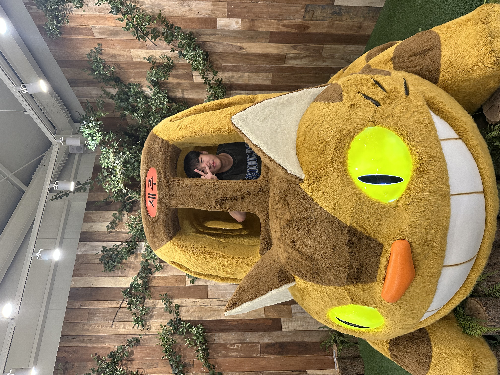
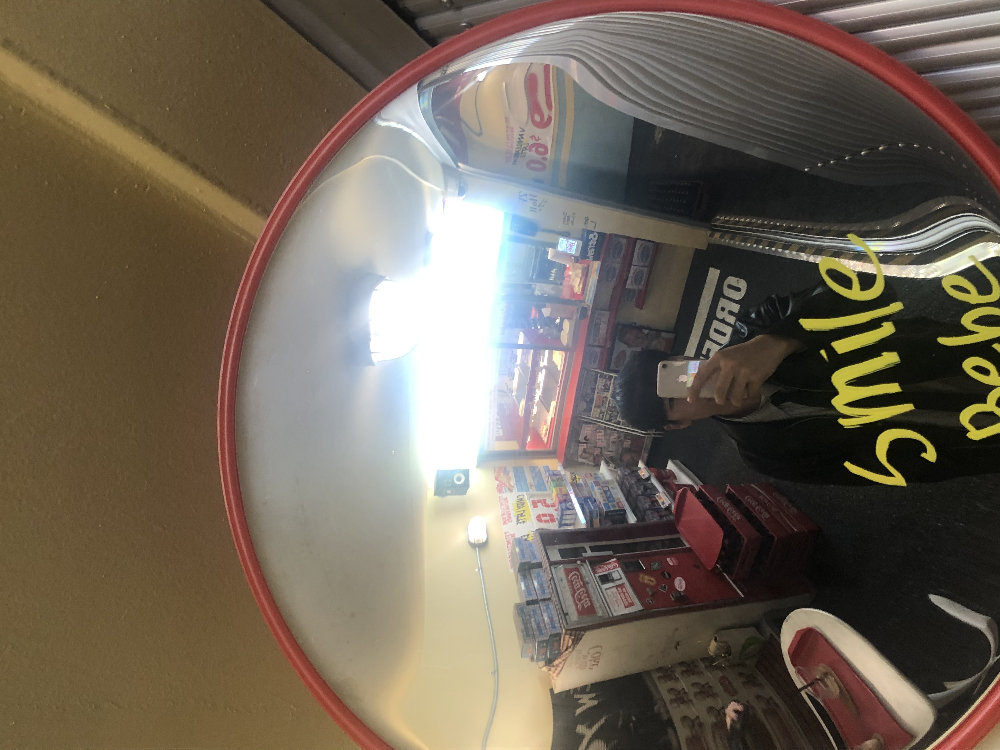
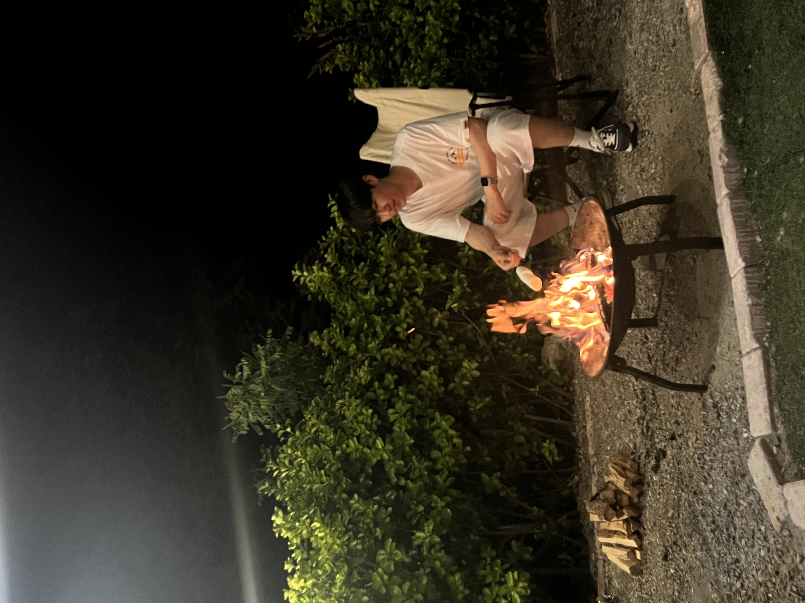
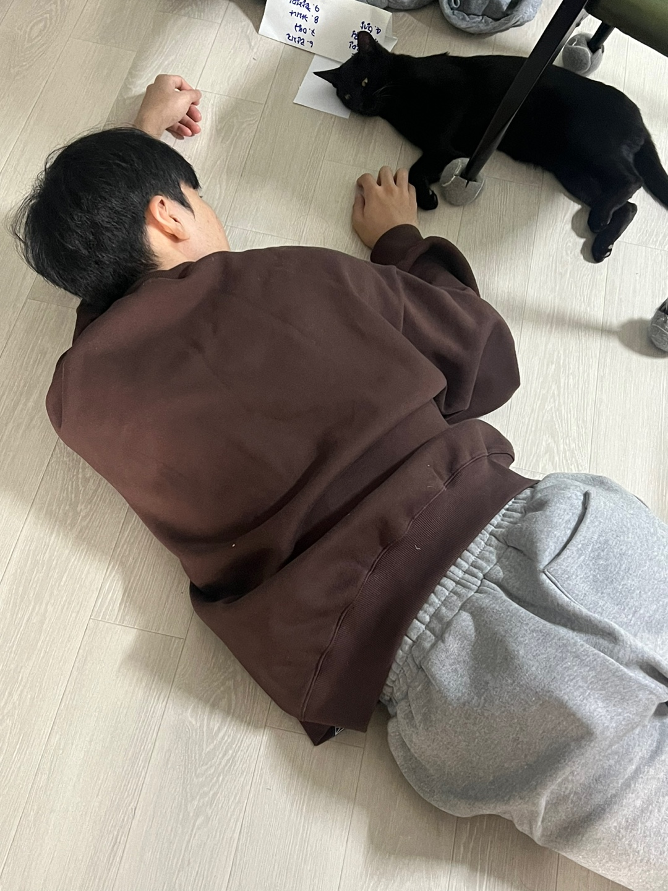
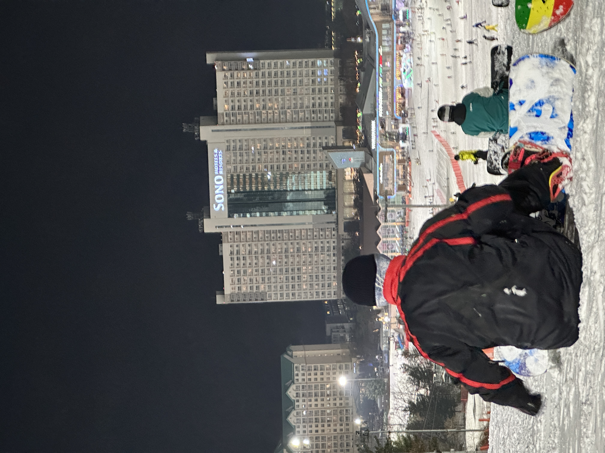
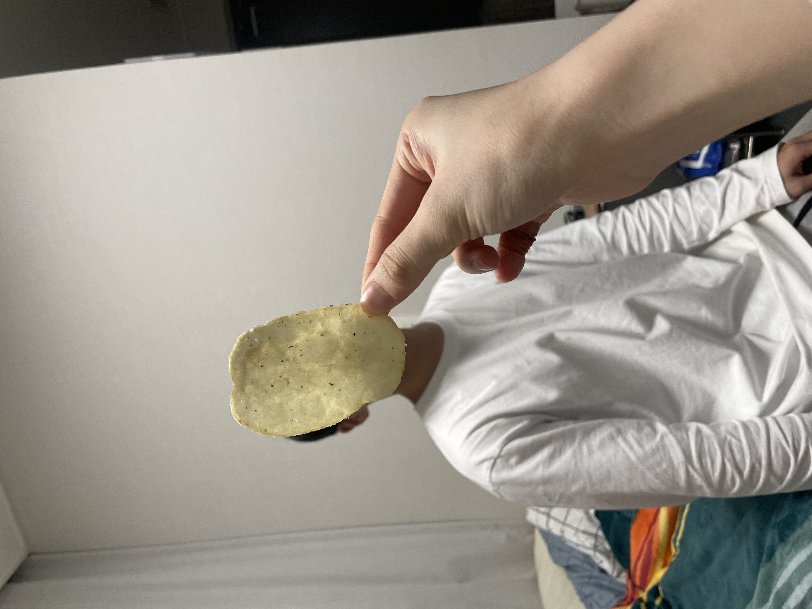
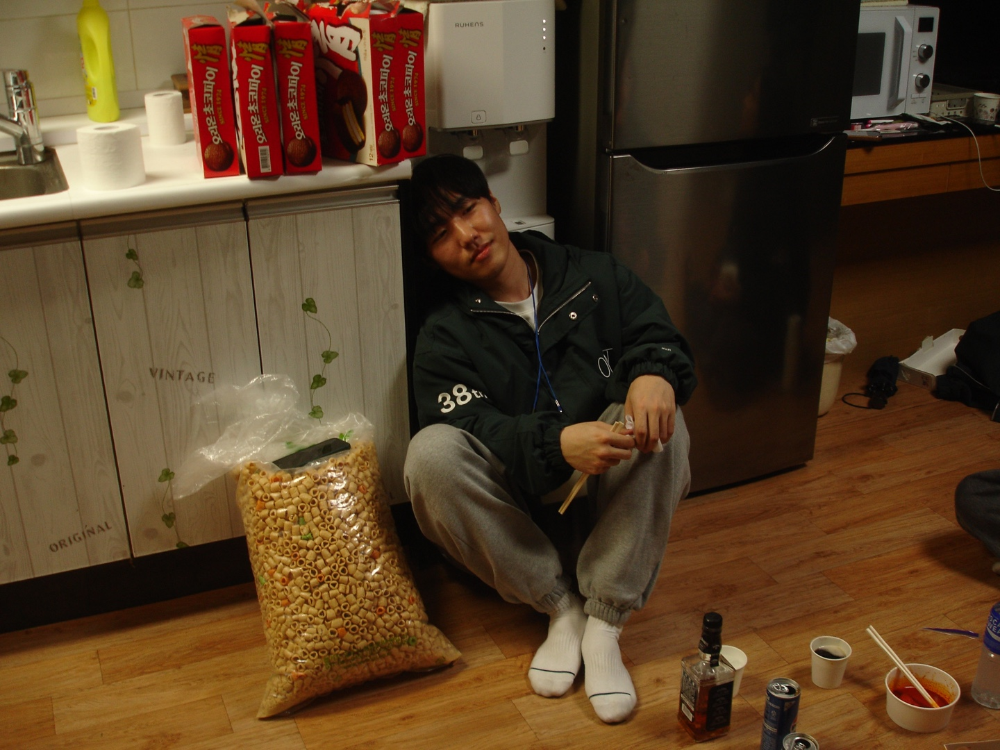

드라마: 이 사랑 통역되나요?
다중언어 통역사 주호진과 어디로 튈지 모르는 톱스타 차무희의 예측불가 로맨스! 수많은 언어를 아는 통역사조차 해석하기 어려웠던 '사랑의 언어'를 서로 맞춰가며 진짜 마음을 통역해 내는 과정이 너무나 설레고 재미있었던 작품입니다.

Look at me!
항상 "왜 그럴까?"라는 기분 좋은 호기심을 안고 코딩하는 백엔드 개발자입니다.
"일단 돌아가네!"에 만족하기보다는, "어떻게 돌아가는 거지? 더 깔끔한 방법은 없을까?"를 파고드는 것을 좋아합니다. 이리저리 부딪혀가며 제 스스로 납득할 수 있는 코드를 짜려고 노력해요.
무엇보다 개발은 혼자 할 때보다 동료들과 함께할 때 훨씬 재밌다고 생각합니다! 서로 자유롭게 의견을 나누고, 제 코드의 부족함도 쿨하게 인정하면서 다 같이 성장하는 과정을 즐깁니다. 그 우당탕탕 즐거운 성장 기록들은 GitHub와 벨로그에 있습니다.
| 이름 | 이성민 |
|---|---|
| MBTI | ENFJ |
| 취미 | 코미디 유튜브 보기, 게임하기, 노래방 가기 |
| 좋아하는 음식 | 김치찌개, 김치찜, 된장찌개, 제육, 돈까스, 엽떡, 치킨, 피자, 햄버거, 등뼈찜 등등 |
코딩도, 노는 것도 100% 진심인 순간들







다중언어 통역사 주호진과 어디로 튈지 모르는 톱스타 차무희의 예측불가 로맨스! 수많은 언어를 아는 통역사조차 해석하기 어려웠던 '사랑의 언어'를 서로 맞춰가며 진짜 마음을 통역해 내는 과정이 너무나 설레고 재미있었던 작품입니다.

나의 시간은 앞으로 가고, 너의 시간은 뒤로 간다! 서로 반대로 흐르는 시간 속에서 단 30일만 사랑할 수 있는 두 사람의 이야기입니다. 처음엔 그저 달달한 로맨스인 줄 알았지만, 나중에 여주인공이 처음부터 울었던 진짜 이유를 깨닫는 순간 수도꼭지가 고장 난 것처럼 펑펑 울게 되는 제 인생 최고의 멜로 영화예요.
오늘 새롭게 배운 것들을 기록합니다.
header, nav, main, section, article, footer 등 시멘틱 태그의 역할과 사용법을 배웠다.